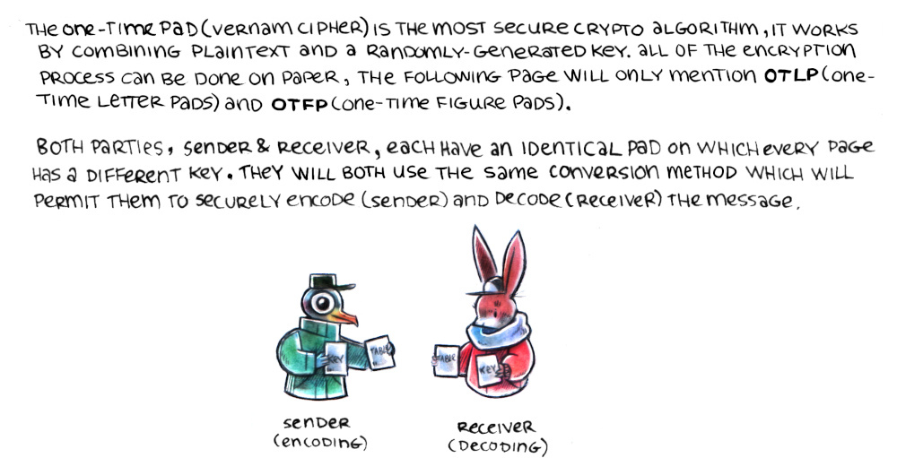
One-time pad(Vernam cipher) is the most secure crypto algorithm, it works by combining plaintext and a randomly-generated key. All of the encryption process can be done on paper, the following page will only mention OTLP(one time letter pads) and OTFP(one time figure pads).
Both parties, sender and receiver, each have an identical pad on which every page has a different key. They will both use the same conversion method which will permit them to securely encode(sender) and decode(receiver) the message.
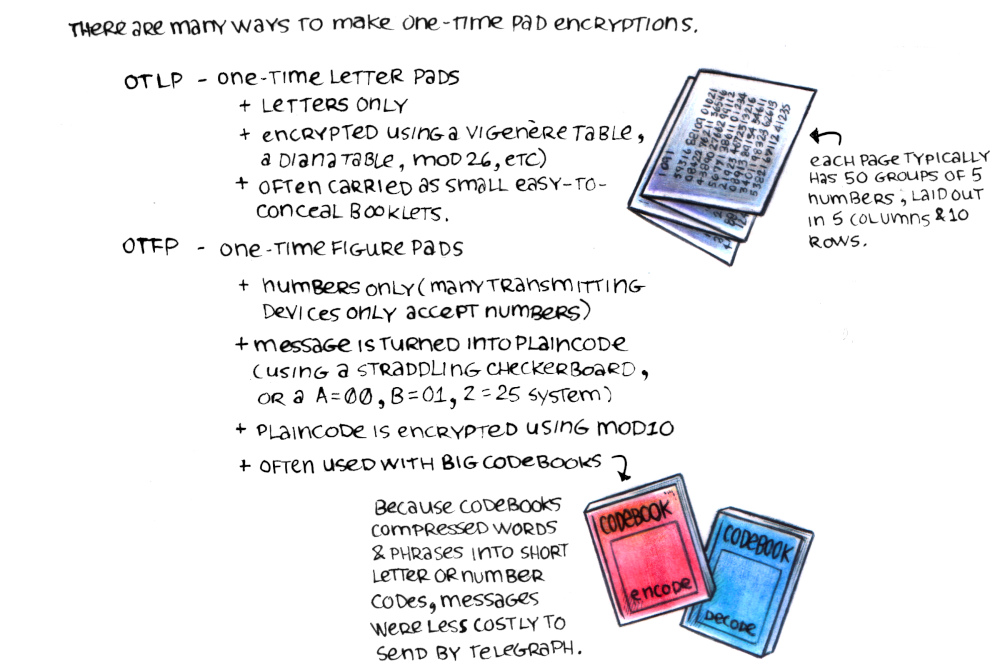
There are many ways to make one-time pad encryptions.
OTLP(one-time letter pads): letters only, encrypted using module 26(and with vigenere or diana tables), often carried as small easy-to-conceal booklets.
OTFP(one-time figure pads): numbers only(many transmitting devices only accept numbers), message is turned into plaincode (using a straddling checkerboard, or a A=00, B=01, Z=25 system), plaincode is encrypted using modulo 10, often used with big codebooks(because codebooks compressed words and phrases into short letter or number codes, messages were less costly to send by telegraph).
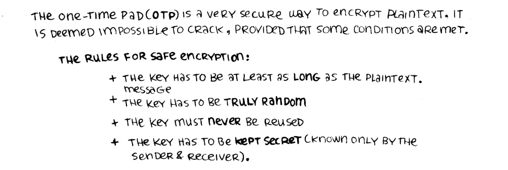
The one-time pad(OTP) is a very secure way to encrypt plaintext. It is deemed impossible to crack, provided that some conditions are met.
The rules for safe encryption: The key has to be at least as long as the plaintext message, the key has to be truly random, the key must never be reused, and the key has to be kept secret(known only by the sender & receiver).
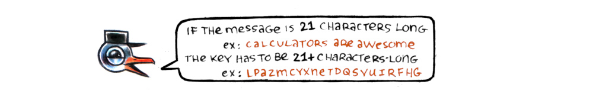
If the message is 21 characters long, for example: calculators are awesome, the key has to be 21+ characters long, for example: LPAZMCYXNERDQSVUIFHG
One time letter pad
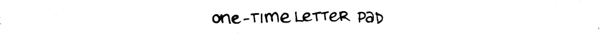
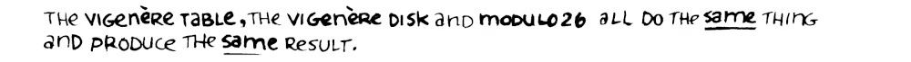
The vignere table, the vigenere disk and modulo 26 all do the same thing and produce the same result.
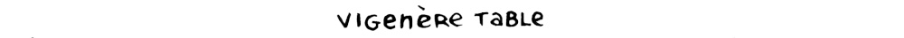
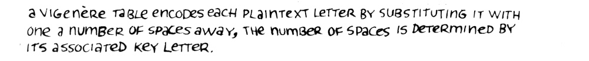
A vigenere table encodes each plaintext letter by substituting it with one a number of spaces away, the number of spaces is determined by the associated key letter.
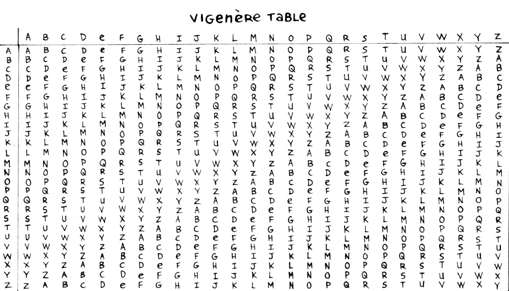
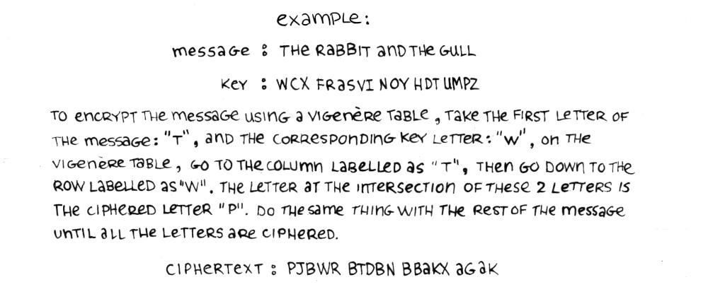
Example:
Message: the rabbit and the gull
key: WCX FRASVI NOY HDT UMPZ
To encrypt the message using a vigenere table, take the first letter of the message: T, and the corresponding key letter: W, on the vignere table, go to the column labelled as T, then go down to the row labelled as W. The letter at the intersection of these 2 letters is the ciphered letter P. Do the same thing with the rest of the message until all the letters are ciphered.
Ciphertext: PJBWR BTDBN BBAKX AGAK
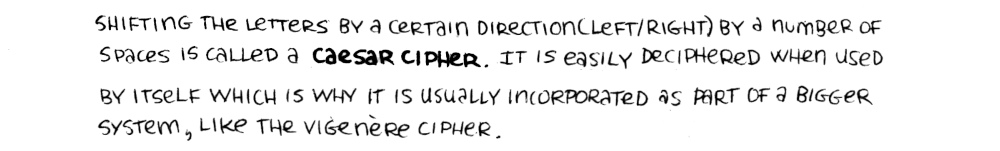
Shifting the letters by a certain direction(left/right) by a number of spaces is called a Caesar Cipher. It is easily deciphered when used by itself which is why it is usually incorporated as part of a bigger system, like the vigenere cipher.
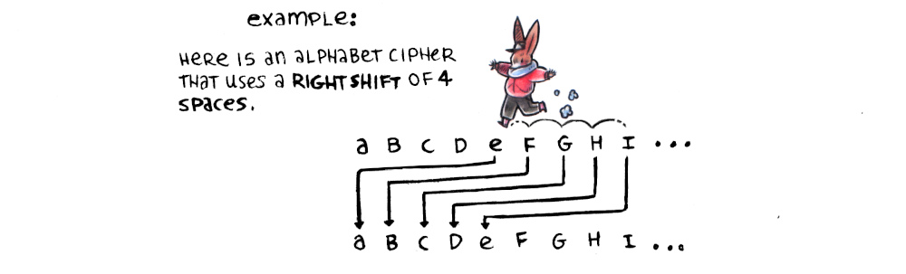
Example: Here is an alphabet that uses a right shift of 4 spaces.
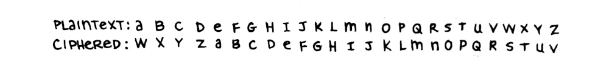
Plaintext: A B C D E F G H I J K L M N O P Q R S T U V W X Y Z
Ciphered: W X Y Z A B C D E F G H I J K L M N O P Q R S T U V
Vigenere Disk
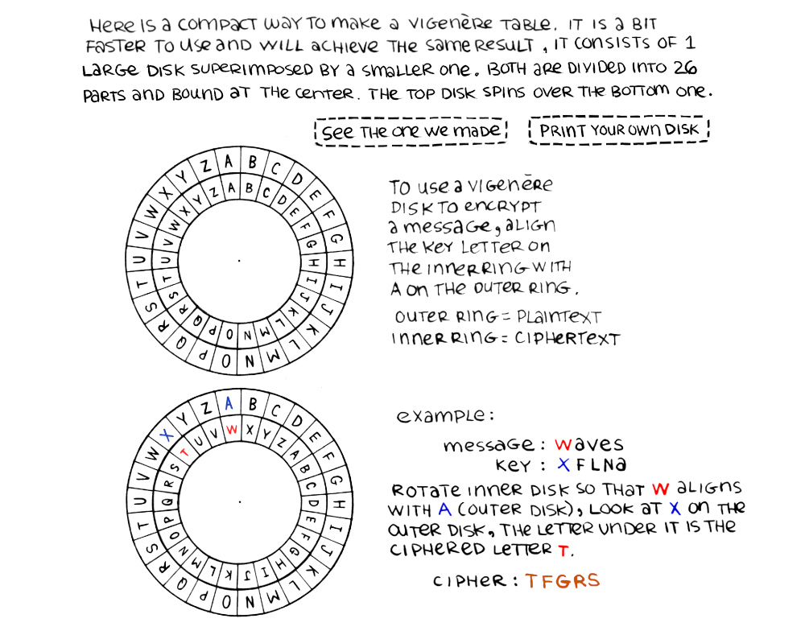
Vigenere Disk Printout Vigenere Disk Photo

Here is a compact way to make a vigenere table, it is a bit faster to use and will achieve the same result. It consists of 1 large disk superimposed by a smaller one. Both are divided into 26 parts and bound at the center. The top disk spins over the bottom one.
To use a vigenere disk to encrypt a mesage, align the key letter on the inner ring with A on the outer ring.
Outer ring = plaintext
Inner ring = ciphertext.
Example:
Message: Waves
Key: XFLNA
Rotate inner disk so that W aligns with A(outer disk), look at X on the outer disk, the letter under it is the ciphered letter T.
Cipher: TFGRS
Module 26
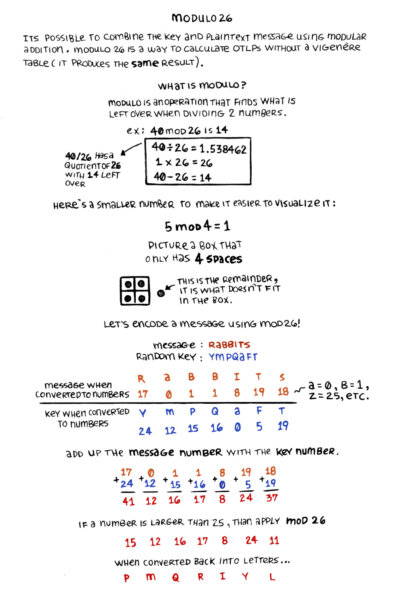
Its also possible to combine the key and plaintext message using modular addition(modulo 26).
Modulo is an operation that finds what is left over when dividing 2 numbers(it really just means, in relation to the vigenere table, that if the number goes past Z, the sequence starts again at A).
Example:
40 mod26 is 14
40/26=1.538462
1x26=26
40-26=14
40/26 has a quotient of 26 with 14 left over
Here's a smaller number to make it easier to visualize it:
5 mod 4 = 1
Picture a box that only has 4 spaces.
A graphic shows a box divided into 4, with a single circle occupying each one, a 5th one lies outside of the box(this is the remainder, it is what doesn't fit in the box).
Let's encode a message using mod26!
message: rabbits
random key: YMPQAFT
R(17) A(0) B(1) B(1) I(8) T(19) S(18) (numbering of alphabet starts at 0, so A is numbered as 0, B as 1, etc). This is the message converted to numbers
Y(24) M(12) P(15) Q(16) A(0) F(5) T(19). This is the key when converted to numbers.
Add up the message number with the key number: 17+24=41, 0+12=12, 1+15=16, 1+16=17, 8+0=8, 19+5=24, 18+19=37
If a number is larger than 25, than apply mod26: 15, 12, 16, 17, 8, 24, 11.
When converted back into letters: P M Q R I Y L
Diana Table
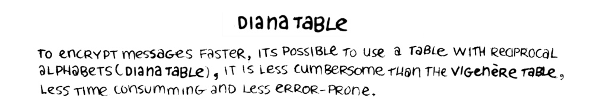
The diana table is an entirely different way to encode plaintext. It encrypts messages faster, it is less cumbersome, less error-prone and less time consuming than the vigenere method.
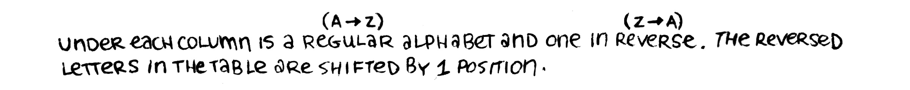
Under each column is a regular alphabet(A to Z) and one in reverse(Z to A). The reversed letters in the table are shifted by 1 position.
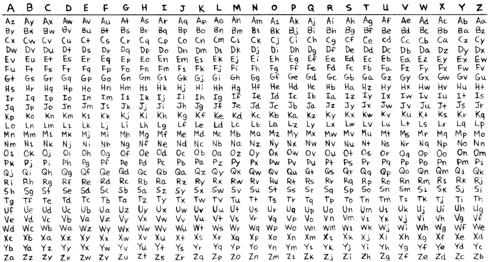
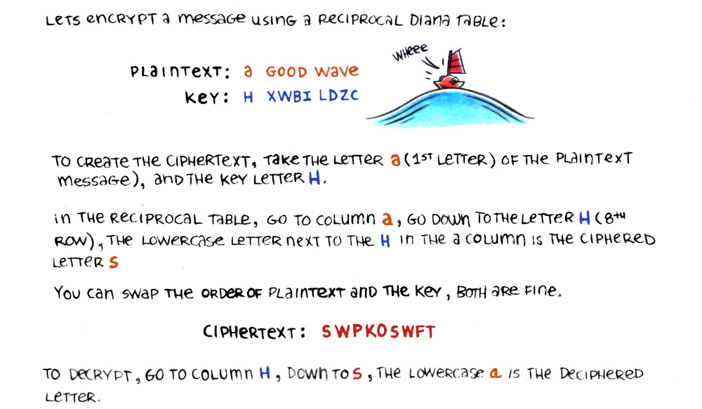
Let's encrypt a message using a reciprocal diana table:
plaintext: a good wave
Key: H XWBI LDZC
To create the ciphertext, take the letter A(1st letter) of the plaintext message), and the key letter H.
In the reciprocal table, go to column A, go down to the letter H (8th row), the lowercase letter next to the H in the A column is the ciphered letter S.
You can swap the order of plaintext and the key, both are fine.
Ciphertext: SWPKOSWFT
To decrypt, go to column H, down to S, the lowercase A is the deciphered letter.
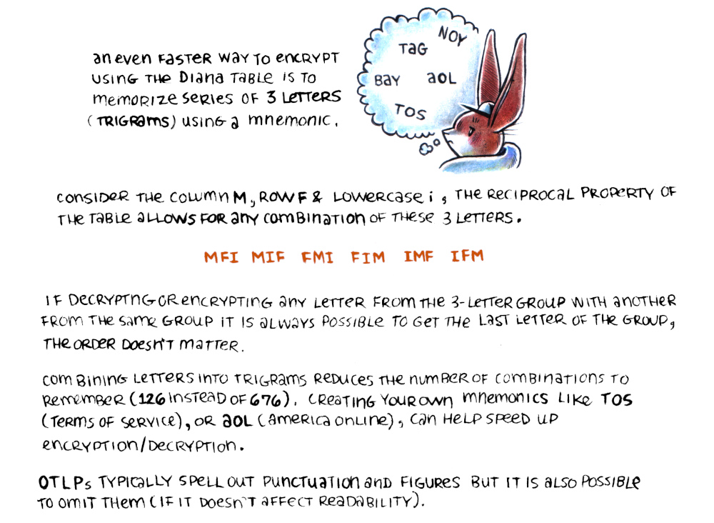
An even faster way to encrypt using the Diana table is to memorize series of 3 letters(trigrams) using a mnemonic.
Consider the column M, row F and lowercase i, the reciprocal property of the table allows for any combination of these 3 letters.
MFI MIF FMI FIM IMF IFM
If decrypting any letters from the 3-letter group with another from the same group, it is always possible to get the last letter of the group, the order doesn't matter.
Combining letters into trigrams reduces the number of combinations to remember(126 instead of 676). Creating your own mnemonic like TOS(terms of service), or AOL(america online), can help speed up encryption/decryption.
OTLPs typically spell out punctuation and figures, but it is also possible to omit them(if it doesn't affect readability).
One-time figure pad
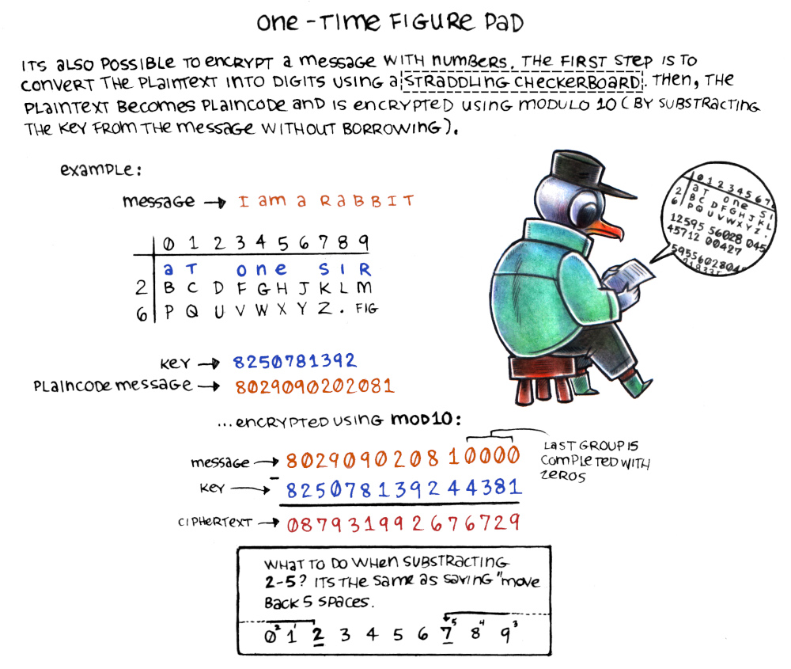
Straddling checkerboardIts also possible to encrypt a message with numbers. The first step is to convert the plaintext into digits using a straddling checkerboard. Then, the plaintext becomes plaincode and is encrypted using modulo 10(by substracting the key from the message without borrowing).
Example:
Message: I am a rabbit
A graphic shows a straddling checkerboard made with the key AT ONE SIR.
Key: 8250781392
Plaincode message: 802909202081
...encrypted using mod10:
The message is substracted by the key: 8-8=0, 0-2=8, 2-5=7, 9-0=0, 0-7=3, 9-8=1, 0-1=9, 2-3=9, 0-9=2, 8-2=6, 1-4=7, 0-4=6, 0-3=7, 0-8=2, 0-1=9 (the last group of the message is completed with zeros).
What to do when substracting 2-5? Its the same as saying "move back 5 spaces", a graphic shows numbers from 0-9, with an arrow starting at 2, skipping to the left 5 times until it hits the number 7.
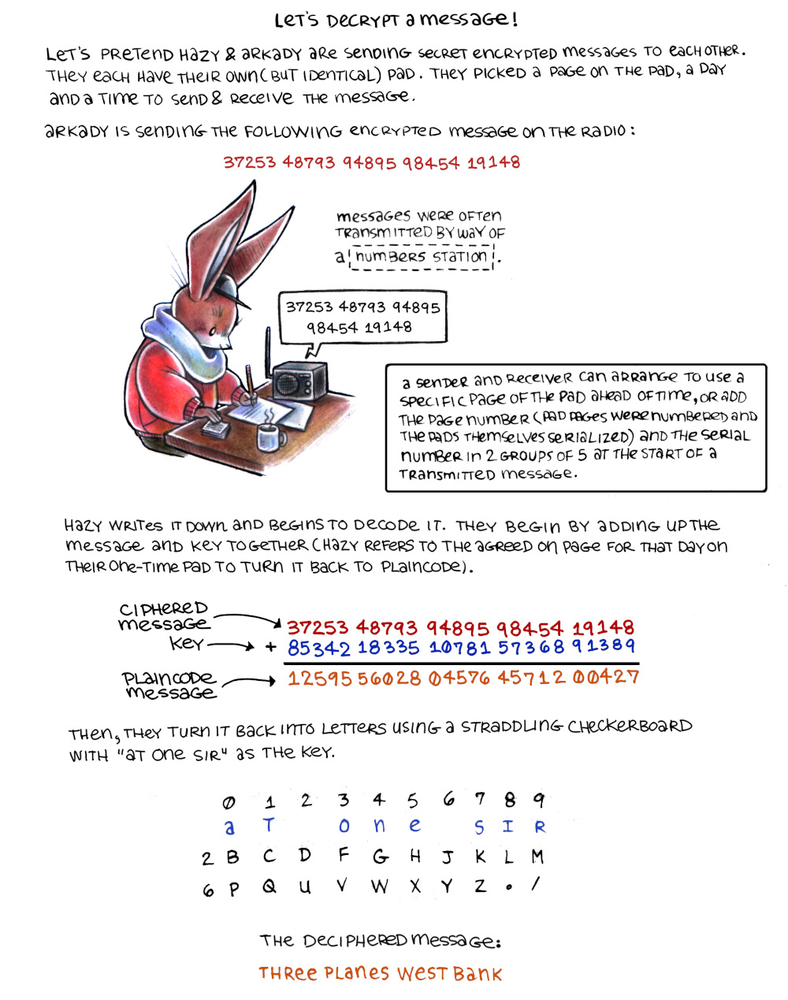
Numbers StationLet's decrypt a message!
Let's pretend Hazy and Arkady are sending secret messages to each other. They each have their own(but identical) pad. They picked a page on the pad, a day and a time to send and receive the message.
Arkady is sending the following encrypted message on the radio:
37253 48793 94895 98454 19148
Messages were often transmitted by way of number stations.
A sender and receiver can arrange to use a specific page of the pad ahead of time, or add the page number(pad pages were numbered and the pads, serialized) and the serial number in 2 groups of 5 at the start of a transmitted message.
Hazy writes it down and begins to decode it. They begin by adding up the message and key together(Hazy refers to the agreed on page for that day on their one-time pad to turn it back into plaincode).
(ciphered message) 37253 48793 94895 98454 19148 + (key) 85342 18335 10781 57368 91389 = 12595 56028 04576 45712 00427 (plaincode message).
Then, they turn it back into letters using a straddling checkerboard with "at one sir" as the key.
The deciphered message: Three planes west bank.